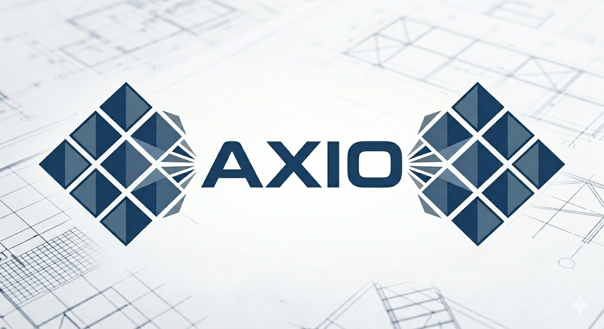

Transforma la complejidad de tu obra en control absoluto.
AXIO es la plataforma definitiva de gestión y auditoría técnica digital diseñada para el sector de la construcción y la ingeniería. Centraliza planos, trazabilidad de ejecuciones, gestión de compras y desvíos en un único ecosistema inteligente.
Conecta a tu equipo de ingeniería y supervisores de campo en tiempo real. Elimina los cuellos de botella documentales, previene errores de ejecución con nuestro sistema Quality Firewall exclusivo.

Los Pilares
de AXIO
Cuatro capacidades integradas que transforman la gestión técnica de obra en un ecosistema digital de control y trazabilidad absoluta.
Control Documental
Gestión inteligente de revisiones. Construcción siempre basada en la última versión aprobada.
- Versionado automático
- Aprobación de planos
- Trazabilidad completa
Quality Firewall
Motor de reglas que bloquea operaciones inconsistentes o planos obsoletos automáticamente.
- Bloqueo automático
- Reglas personalizables
- Alertas en tiempo real
Compras End-to-End
Trazabilidad total desde el Requerimiento (RQ) hasta el Registro de Entregas.
- Flujo RQ → OC → Entrega
- Control de desvíos
- Auditoría integrada
PWA para Campo
Interfaz móvil ágil para registros "in situ" por supervisores de obra.
- Funciona offline
- Registro fotográfico
- Sincronización auto
Arquitectura
Técnica
Diseñada para CTOs y equipos de IT. Una infraestructura robusta, escalable y segura que cumple con los más altos estándares de la industria.
Arquitectura
Multi-Tenant (SaaS)
Aislamiento lógico de datos mediante tenant_id,
garantizando la segregación total entre organizaciones sin comprometer el
rendimiento.
Backend / Frontend
Node.js (MVC) + PWA
Arquitectura MVC modular en Node.js con PWA de alto rendimiento. Service Workers para operación offline y sincronización inteligente en campo.
Base de Datos
MySQL · Integridad Referencial
MySQL con integridad referencial estricta y triggers transaccionales. Diseño normalizado con constraints para auditoría y trazabilidad de datos críticos.
Seguridad
JWT · Zero-Trust · RBAC
Autenticación JWT con roles granulares y política Zero-Trust. Cada request es verificado, cada acción es auditada, cada acceso es controlado.
¿Listo para digitalizar
su gestión de obra?
Auditoría técnica digital de precisión. Control absoluto sobre cada fase de su proyecto.
Nuestros Servicios
Soluciones integrales para organizaciones que buscan la excelencia operativa y el cumplimiento normativo
Relevamiento y Diagnóstico
Evaluación inicial del estado de situación en materia de seguridad e higiene laboral en su organización, identificando riesgos, incumplimientos y oportunidades de mejora.
Programa Anual de Seguridad
Elaboración y gestión del Programa Anual de Higiene y Seguridad en el Trabajo (PAHST) conforme a la Ley 19587 y su decreto reglamentario 351/79.
Identificación de Riesgos (IPER)
Identificación de peligros, evaluación y control de riesgos laborales. Elaboración de matrices de riesgo y planes de acción correctivos y preventivos.
Capacitación al Personal
Diseño e implementación de planes de capacitación en prevención de accidentes, uso de EPP, evacuación, primeros auxilios y cultura de seguridad organizacional.
Documentación Legal
Confección y actualización de toda la documentación exigida por la SRT: registros, legajos, planillas de capacitación, investigación de accidentes e incidentes.
Gestión en Obras y Empresas
Asesoramiento continuo en empresas de construcción, industria y servicios. Presencia en obra, confección de legajos y seguimiento ante organismos de control.
ISO 9001 — Calidad
Preparación, asesoramiento e implementación de Sistemas de Gestión de la Calidad. Acompañamos a su organización desde el diagnóstico inicial hasta la auditoría de certificación.
ISO 14001 — Medio Ambiente
Implementación de Sistemas de Gestión Ambiental. Evaluación de aspectos e impactos ambientales, cumplimiento legal y mejora continua del desempeño ambiental de su empresa.
ISO 45001 — SST
Implementación de Sistemas de Gestión de Seguridad y Salud en el Trabajo. Integración con los requisitos legales argentinos y con otras normas del sistema integrado de gestión.
Diagnóstico GAP Analysis
Análisis de brechas (GAP Analysis) previo a la certificación: evaluamos el nivel de cumplimiento actual de su organización respecto a los requisitos de la norma aplicable.
Auditoría Interna Previa
Realización de auditorías internas antes de la certificación para detectar no conformidades, preparar al personal y asegurar el éxito de la auditoría externa.
Acompañamiento en Auditoría
Presencia y soporte profesional durante los días de auditoría con el organismo certificador, gestionando consultas, hallazgos y planes de acción correctivos.